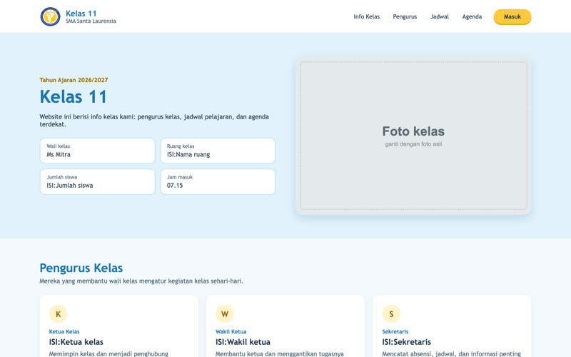

Pendidikan
-
SMP Santa Laurensia Suvarna Sutera
Sekolah Menengah Pertama
-
SMA Santa Laurensia Suvarna Sutera
Sekolah Menengah Atas, sekarang kelas XI
Keahlian
- Memasak
- Design
- Time management
- Disiplin
- Kerja sama
- Mudah beradaptasi
Pengalaman
-
Menang lomba esai
01
-
Menyusun laporan penelitian sains
02
-
Menyusun laporan penelitian sosial
03
-
Training public speaking
04
-
Community service
05
-
Pelayanan sebagai usher
06
Portofolio Proyek

Tugas kelompok bersama Adel
Class Information Website
Website info kelas dengan HTML dan CSS: pengurus kelas, jadwal pelajaran, dan agenda.
Lihat websiteKontak
- Email
sarah.michelle@santa-laurensia.sch.id - Telepon
+62 878-0417-0335 - Instagram
@chelledrs